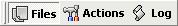
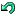
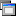

Glavni prozor Ant Renamer-a je podijeljen na tri dijela:
Ovim stranicama može se pristupiti putem alatne trake koja izgleda ovako:

Jednom kada definirate datoteke za preimenovanje i kako ih preimenovati, kliknite na "Idi" tipku. Zapisnik vam pokazuje ono što se dogodilo svakoj datoteci.

"Poništi" tipka vraæa stare nazive. Ima samo jednu razinu vraæanja, tako da možete vratiti samo zadnju promjenu koju ste napravili.Tipka

"Uvijek na vrhu", kada je potvrðena, omoguæava zadržavanje prozora uvijek iznad ostalih prozora kada nisu aktivni.Tipka "Opcije" otvara prozor opcija.